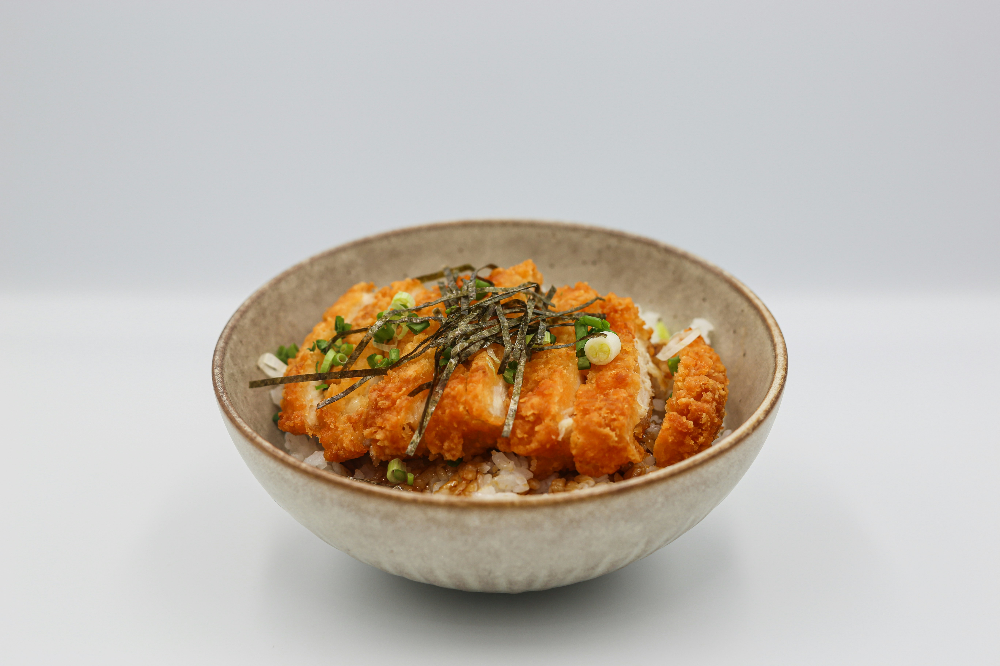
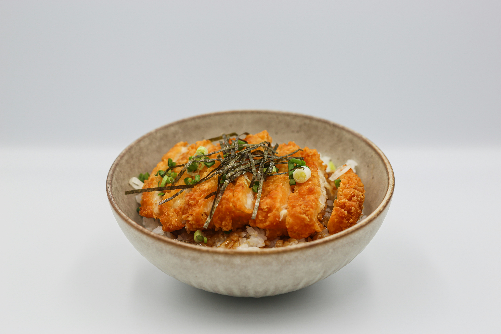

Chicken Katsu Curry holds a special place in my heart. It's one of those dishes that instantly makes you feel like you're wrapped in a warm, comforting hug. I remember the first time I had it—it was at a small Japanese eatery tucked away in London. The crispy panko-coated chicken paired with the creamy, fragrant curry sauce left me completely spellbound. Naturally, I had to recreate it at home, and now it’s a staple in my kitchen. Let me take you on this culinary journey and show you how to make it yourself!
Ingredients (Serves 4)
Measurements
For the chicken
4 boneless, skinless chicken breasts
Salt and pepper, to season
1 cup all-purpose flour
2 large eggs, beaten
2 cups panko breadcrumbs (Japanese breadcrumbs)
Vegetable oil for frying
For the Curry Sauce
1 large onion, finely chopped
2 medium carrots, grated or finely diced
3 cloves garlic, minced
1-inch piece of ginger, grated
2 tbsp curry powder (mild or medium, depending on your heat preference)
1 tbsp garam masala
2 tbsp all-purpose flour (for thickening)
2 cups chicken or vegetable stock
1 tbsp soy sauce
1 tbsp honey (optional, for a touch of sweetness)
Salt and pepper to taste
Serve With:
Steamed white rice
Pickled radish or ginger (optional garnish)
The Method
Prep the Chicken
Start by placing the chicken breasts between two sheets of plastic wrap and gently pounding them to an even thickness. This ensures they cook evenly and stay juicy. Season both sides with salt and pepper.Dip each chicken breast into the flour (shake off excess), then into the egg, and finally coat generously in panko breadcrumbs. Press the breadcrumbs gently to ensure they stick.
Fry To Golden perfection
Heat about 1 inch of vegetable oil in a large skillet over medium heat. To test if the oil is ready, drop in a breadcrumb—it should sizzle immediately.
Carefully fry each chicken breast for 3-4 minutes per side, until golden brown and fully cooked. Transfer to a wire rack or paper towels to drain excess oil.
Make The Curry Sauce
In a saucepan, heat 1 tablespoon of oil and sauté the onion, carrot, garlic, and ginger until softened and fragrant, about 5 minutes.
Sprinkle in the curry powder, garam masala, and flour, stirring constantly to coat the veggies. Cook for 1-2 minutes to toast the spices.
Slowly pour in the chicken stock while whisking to avoid lumps. Add the soy sauce and honey, then bring the mixture to a gentle simmer. Cook for 10 minutes until the sauce thickens slightly. If you prefer a smoother sauce, blend it using an immersion blender. Season with salt and pepper to taste.
Bring It All Together
Slice the chicken katsu into strips for easier serving. Spoon a generous ladle of curry sauce over a bed of fluffy white rice, and place the crispy chicken on top. Garnish with pickled radish or ginger if desired.
Every time I make this Chicken Katsu Curry, I'm transported back to that little Japanese eatery that started my obsession. It’s a recipe that not only tastes incredible but also fills the kitchen with the most mouthwatering aroma. Whether you’re a seasoned cook or just dipping your toes into the world of Japanese-inspired cuisine, this dish is guaranteed to win hearts—and stomachs.
Let me know if you try it! Was it love at first bite for you too?
 
